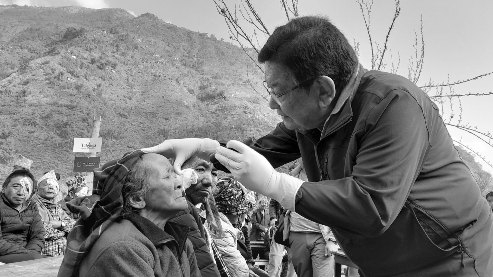

Dr.Sanduk Ruit

Dr. Sanduk Ruit is not just a name in the field of medicine — he is a global humanitarian, a
visionary surgeon, and a quiet revolutionary who changed the way the world sees, quite literally.
Born in the remote village of Olangchung Gola in the mountains of eastern Nepal in 1954, Dr. Ruit
grew up witnessing firsthand the struggles of rural life, including the devastating impact of
preventable diseases. These early experiences shaped his unwavering resolve to serve the poor, and
his journey would go on to transform the lives of countless people across continents.
Trained in Australia, Dr. Ruit chose to return to Nepal and dedicate his life to those who needed
him most. With relentless determination, he pioneered a groundbreaking small-incision cataract
surgery technique that dramatically reduced both cost and recovery time. His method, which costs
under $25 per surgery, has been recognized worldwide for its effectiveness and affordability,
particularly in underserved regions.
Through the Tilganga Institute of Ophthalmology, which he co-founded, Dr. Ruit created a model of
sustainable, accessible, and high-quality eye care. He has led eye camps in the most remote corners
of Nepal and beyond — from the Himalayas to North Korea, Ethiopia, and Myanmar — often trekking for
days to reach patients who had lost all hope. In operating rooms set up in tents and rural
schoolhouses, he performed sight-restoring surgeries with grace and precision, bringing tears of joy
to people who could once again see the faces of their loved ones.
Dr. Ruit’s work has earned him numerous international accolades, including the Ramon Magsaysay
Award, the Isa Award for Service to Humanity, and global recognition from humanitarian leaders. Yet
despite his fame, he remains deeply humble, known for his quiet demeanor, gentle hands, and tireless
spirit.
To honor Dr. Sanduk Ruit is to celebrate the extraordinary impact one person can have when guided by
compassion, courage, and an unshakable belief in equality. He didn’t just restore sight—he restored
dignity, independence, and possibility to those abandoned by traditional healthcare systems.
His legacy lives on in every pair of eyes that opens to the light again, in every surgeon he trains,
and in every life he touches. Dr. Ruit reminds us that medicine at its best is not just a science —
it is an act of love.
Dr. Sanduk Ruit is not just a name in the field of medicine — he is a global humanitarian, a visionary
surgeon, and a quiet revolutionary who changed the way the world sees, quite literally.
Born in the remote village of Olangchung Gola in the mountains of eastern Nepal in 1954, Dr. Ruit grew
up witnessing firsthand the struggles of rural life, including the devastating impact of preventable
diseases. These early experiences shaped his unwavering resolve to serve the poor, and his journey would
go on to transform the lives of countless people across continents.
Trained in Australia, Dr. Ruit chose to return to Nepal and dedicate his life to those who needed him
most. With relentless determination, he pioneered a groundbreaking small-incision cataract surgery
technique that dramatically reduced both cost and recovery time. His method, which costs under $25 per
surgery, has been recognized worldwide for its effectiveness and affordability, particularly in
underserved regions. His innovation has helped restore sight to over 130,000 people directly, and
millions more indirectly through the training of other surgeons and the expansion of his methods.
Through the Tilganga Institute of Ophthalmology, which he co-founded, Dr. Ruit created a model of
sustainable, accessible, and high-quality eye care. He has led eye camps in the most remote corners of
Nepal and beyond — from the Himalayas to North Korea, Ethiopia, and Myanmar — often trekking for days to
reach patients who had lost all hope. In operating rooms set up in tents and rural schoolhouses, he
performed sight-restoring surgeries with grace and precision, bringing tears of joy to people who could
once again see the faces of their loved ones.
Dr. Ruit’s vision extended beyond surgery — he helped create an entire ecosystem of care by establishing
local manufacturing of intraocular lenses, drastically reducing costs while maintaining world-class
standards. His approach shattered the misconception that quality eye care must be expensive and
urban-centric. Instead, he proved that compassion, innovation, and perseverance could deliver miracles
in the most unlikely places.
Dr. Ruit’s work has earned him numerous international accolades, including the Ramon Magsaysay Award,
the Isa Award for Service to Humanity, and global recognition from humanitarian leaders. Yet despite his
fame, he remains deeply humble, known for his quiet demeanor, gentle hands, and tireless spirit.
Colleagues speak of his unmatched work ethic, patients recall his kindness, and communities revere him
as a beacon of hope.
To honor Dr. Sanduk Ruit is to celebrate the extraordinary impact one person can have when guided by
compassion, courage, and an unshakable belief in equality. He didn’t just restore sight — he restored
dignity, independence, and possibility to those abandoned by traditional healthcare systems. His
philosophy is simple yet profound: no one should live in darkness simply because they are poor.
His legacy lives on in every pair of eyes that opens to the light again, in every surgeon he trains, and
in every life he touches. Dr. Ruit reminds us that medicine at its best is not just a science — it is an
act of love. He has lit a path for others to follow, proving that even in a world clouded by inequality,
vision — both literal and metaphorical — can prevail.
If you have time, you should read more about this incredible human being on his Wikipedia entry.